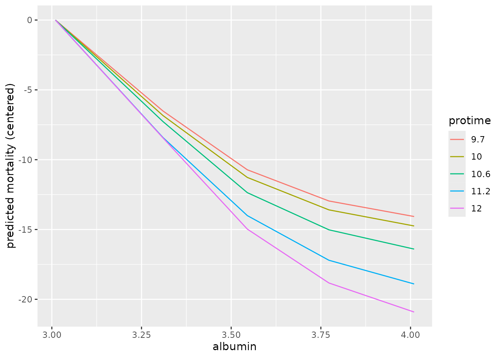

Partial dependence (PD)
Partial dependence (PD) shows the expected prediction from a model as a function of a single predictor or multiple predictors. The expectation is marginalized over the values of all other predictors, giving something like a multivariable adjusted estimate of the model’s prediction.
You can compute PD and individual conditional expectation (ICE) in three ways:
using in-bag predictions for the training data. In-bag PD indicates relationships that the model has learned during training. This is helpful if your goal is to interpret the model.
using out-of-bag predictions for the training data. Out-of-bag PD indicates relationships that the model has learned during training but using the out-of-bag data simulates application of the model to new data. This is helpful if you want to test your model’s reliability or fairness in new data but you don’t have access to a large testing set.
using predictions for a new set of data. New data PD shows how the model predicts outcomes for observations it has not seen. This is helpful if you want to test your model’s reliability or fairness.
Classification
Begin by fitting an oblique classification random forest:
set.seed(329)
index_train <- sample(nrow(penguins_orsf), 150)
penguins_orsf_train <- penguins_orsf[index_train, ]
penguins_orsf_test <- penguins_orsf[-index_train, ]
fit_clsf <- orsf(data = penguins_orsf_train,
formula = species ~ .)Compute PD using out-of-bag data for
flipper_length_mm = c(190, 210).
pred_spec <- list(flipper_length_mm = c(190, 210))
pd_oob <- orsf_pd_oob(fit_clsf, pred_spec = pred_spec)
pd_oob
#> Key: <class>
#> class flipper_length_mm mean lwr medn upr
#> <fctr> <num> <num> <num> <num> <num>
#> 1: Adelie 190 0.6189516 0.203758520 0.76151989 0.9804701
#> 2: Adelie 210 0.4345264 0.019621063 0.57083317 0.8670605
#> 3: Chinstrap 190 0.2117026 0.017689034 0.15427910 0.7211906
#> 4: Chinstrap 210 0.1827278 0.019156532 0.09488838 0.7040271
#> 5: Gentoo 190 0.1693458 0.001386842 0.02817413 0.5722259
#> 6: Gentoo 210 0.3827458 0.064744748 0.20052813 0.9478840Note that predicted probabilities are returned for each class and
probabilities in the mean column sum to 1 if you take the
sum over each class at a specific value of the pred_spec
variables. For example,
sum(pd_oob[flipper_length_mm == 190, mean])
#> [1] 1But this isn’t the case for the median predicted probability!
sum(pd_oob[flipper_length_mm == 190, medn])
#> [1] 0.9439731Regression
Begin by fitting an oblique regression random forest:
set.seed(329)
index_train <- sample(nrow(penguins_orsf), 150)
penguins_orsf_train <- penguins_orsf[index_train, ]
penguins_orsf_test <- penguins_orsf[-index_train, ]
fit_regr <- orsf(data = penguins_orsf_train,
formula = bill_length_mm ~ .)Compute PD using new data for
flipper_length_mm = c(190, 210).
pred_spec <- list(flipper_length_mm = c(190, 210))
pd_new <- orsf_pd_new(fit_regr,
pred_spec = pred_spec,
new_data = penguins_orsf_test)
pd_new
#> flipper_length_mm mean lwr medn upr
#> <num> <num> <num> <num> <num>
#> 1: 190 42.98432 37.09469 43.70910 48.68249
#> 2: 210 45.67197 40.51672 46.32944 51.70136You can also let pred_spec_auto pick reasonable values
like so:
pred_spec = pred_spec_auto(species, island, body_mass_g)
pd_new <- orsf_pd_new(fit_regr,
pred_spec = pred_spec,
new_data = penguins_orsf_test)
pd_new
#> species island body_mass_g mean lwr medn upr
#> <fctr> <fctr> <num> <num> <num> <num> <num>
#> 1: Adelie Biscoe 3200 40.33738 37.22209 40.35623 44.24697
#> 2: Chinstrap Biscoe 3200 45.15968 42.65776 45.17753 47.66077
#> 3: Gentoo Biscoe 3200 42.85356 40.20251 42.58572 46.90547
#> 4: Adelie Dream 3200 40.18136 36.99455 40.38046 43.93391
#> 5: Chinstrap Dream 3200 46.25073 43.56337 45.95777 49.20569
#> 6: Gentoo Dream 3200 42.64433 39.89356 42.65380 46.35684
#> 7: Adelie Torgersen 3200 39.91590 36.77811 39.78430 43.70360
#> 8: Chinstrap Torgersen 3200 44.32424 41.97782 44.44428 46.74401
#> 9: Gentoo Torgersen 3200 42.13079 39.48500 41.81257 45.88565
#> 10: Adelie Biscoe 3550 40.82883 38.05637 40.61602 44.62936
#> 11: Chinstrap Biscoe 3550 45.85867 43.52230 45.78296 48.38591
#> 12: Gentoo Biscoe 3550 43.37087 40.80462 43.02377 47.30973
#> 13: Adelie Dream 3550 40.82540 38.14951 40.78235 44.42058
#> 14: Chinstrap Dream 3550 47.33983 44.86173 46.80613 50.46394
#> 15: Gentoo Dream 3550 43.32028 40.87838 43.22933 46.97065
#> 16: Adelie Torgersen 3550 40.26443 37.35373 40.07674 44.07842
#> 17: Chinstrap Torgersen 3550 44.82874 42.65262 44.91015 47.20427
#> 18: Gentoo Torgersen 3550 42.53331 40.00016 42.11004 46.34434
#> 19: Adelie Biscoe 3975 41.65217 38.95582 41.37085 45.42322
#> 20: Chinstrap Biscoe 3975 46.61912 44.60091 46.48993 49.10143
#> 21: Gentoo Biscoe 3975 44.10667 41.58521 43.75246 47.92287
#> 22: Adelie Dream 3975 41.55214 39.17218 41.22423 45.18560
#> 23: Chinstrap Dream 3975 48.17340 45.91190 47.60164 51.49108
#> 24: Gentoo Dream 3975 44.05948 41.76161 43.85747 47.58576
#> 25: Adelie Torgersen 3975 40.96341 38.12704 40.69760 44.71637
#> 26: Chinstrap Torgersen 3975 45.47718 43.49451 45.49126 47.68031
#> 27: Gentoo Torgersen 3975 43.15559 40.71655 42.64245 46.92422
#> 28: Adelie Biscoe 4700 42.91185 40.44139 42.40096 46.78877
#> 29: Chinstrap Biscoe 4700 47.19084 45.41620 47.09687 49.55237
#> 30: Gentoo Biscoe 4700 45.31486 43.07576 44.86043 49.23657
#> 31: Adelie Dream 4700 42.75827 40.50770 42.15596 46.52367
#> 32: Chinstrap Dream 4700 48.39701 46.33896 48.04037 51.17168
#> 33: Gentoo Dream 4700 45.11246 42.93144 44.78240 48.81725
#> 34: Adelie Torgersen 4700 42.10446 39.73620 41.57600 45.70392
#> 35: Chinstrap Torgersen 4700 46.20346 44.46117 46.16889 48.37807
#> 36: Gentoo Torgersen 4700 44.33649 42.23955 43.82640 48.03150
#> 37: Adelie Biscoe 5300 43.85931 41.38190 43.20628 48.06228
#> 38: Chinstrap Biscoe 5300 47.56544 45.69049 47.53388 49.86297
#> 39: Gentoo Biscoe 5300 46.16857 43.81217 45.58655 50.60107
#> 40: Adelie Dream 5300 43.61141 41.29873 43.19309 47.47156
#> 41: Chinstrap Dream 5300 48.51039 46.39622 48.29055 51.00490
#> 42: Gentoo Dream 5300 45.93975 43.71594 45.53941 49.90436
#> 43: Adelie Torgersen 5300 42.93254 40.64232 42.32693 46.81252
#> 44: Chinstrap Torgersen 5300 46.65325 44.85232 46.56831 49.08427
#> 45: Gentoo Torgersen 5300 45.12114 42.96226 44.52876 49.34430
#> species island body_mass_g mean lwr medn uprBy default, all combinations of all variables are used. However, you can also look at the variables one by one, separately, like so:
pd_new <- orsf_pd_new(fit_regr,
expand_grid = FALSE,
pred_spec = pred_spec,
new_data = penguins_orsf_test)
pd_new
#> variable value level mean lwr medn upr
#> <char> <num> <char> <num> <num> <num> <num>
#> 1: species NA Adelie 41.89587 37.10910 41.50096 48.43226
#> 2: species NA Chinstrap 47.12237 42.42971 46.98538 51.48872
#> 3: species NA Gentoo 44.38067 39.88705 43.85778 51.21616
#> 4: island NA Biscoe 44.22053 37.22122 45.27023 51.21616
#> 5: island NA Dream 44.44227 37.03201 45.61137 51.48872
#> 6: island NA Torgersen 43.31009 36.99040 44.32960 49.87707
#> 7: body_mass_g 3200 <NA> 42.87072 37.03956 44.02023 49.20569
#> 8: body_mass_g 3550 <NA> 43.57345 37.56123 44.53805 50.46394
#> 9: body_mass_g 3975 <NA> 44.33545 38.35495 45.24071 51.49108
#> 10: body_mass_g 4700 <NA> 45.22686 39.90177 46.34731 51.17168
#> 11: body_mass_g 5300 <NA> 45.91904 40.82776 46.95826 51.47007And you can also bypass all the bells and whistles by using your own
data.frame for a pred_spec. (Just make sure
you request values that exist in the training data.)
custom_pred_spec <- data.frame(species = 'Adelie',
island = 'Biscoe')
pd_new <- orsf_pd_new(fit_regr,
pred_spec = custom_pred_spec,
new_data = penguins_orsf_test)
pd_new
#> species island mean lwr medn upr
#> <fctr> <fctr> <num> <num> <num> <num>
#> 1: Adelie Biscoe 41.97228 37.22122 41.60707 48.43226Survival
Begin by fitting an oblique survival random forest:
set.seed(329)
index_train <- sample(nrow(pbc_orsf), 150)
pbc_orsf_train <- pbc_orsf[index_train, ]
pbc_orsf_test <- pbc_orsf[-index_train, ]
fit_surv <- orsf(data = pbc_orsf_train,
formula = Surv(time, status) ~ . - id,
oobag_pred_horizon = 365.25 * 5)Compute PD using in-bag data for
bili = c(1,2,3,4,5):
pd_train <- orsf_pd_inb(fit_surv, pred_spec = list(bili = 1:5))
pd_train
#> pred_horizon bili mean lwr medn upr
#> <num> <num> <num> <num> <num> <num>
#> 1: 1826.25 1 0.2577640 0.02216336 0.1354828 0.8917942
#> 2: 1826.25 2 0.3133729 0.06843055 0.1899919 0.9203372
#> 3: 1826.25 3 0.3715380 0.11484237 0.2596426 0.9416791
#> 4: 1826.25 4 0.4252787 0.15715950 0.3358026 0.9591581
#> 5: 1826.25 5 0.4675140 0.20084622 0.3871663 0.9655296If you don’t have specific values of a variable in mind, let
pred_spec_auto pick for you:
pd_train <- orsf_pd_inb(fit_surv, pred_spec_auto(bili))
pd_train
#> pred_horizon bili mean lwr medn upr
#> <num> <num> <num> <num> <num> <num>
#> 1: 1826.25 0.590 0.2496484 0.02042449 0.1268818 0.8823385
#> 2: 1826.25 0.725 0.2519816 0.02060212 0.1295009 0.8836536
#> 3: 1826.25 1.500 0.2810395 0.04002394 0.1614488 0.9040617
#> 4: 1826.25 3.500 0.3971677 0.13441288 0.2939068 0.9501230
#> 5: 1826.25 7.210 0.5354697 0.27879513 0.4675994 0.9782084Specify pred_horizon to get PD at each value:
pd_train <- orsf_pd_inb(fit_surv, pred_spec_auto(bili),
pred_horizon = seq(500, 3000, by = 500))
pd_train
#> pred_horizon bili mean lwr medn upr
#> <num> <num> <num> <num> <num> <num>
#> 1: 500 0.590 0.06232005 0.0004433990 0.008916421 0.5918463
#> 2: 1000 0.590 0.14306830 0.0057937418 0.056439901 0.7385612
#> 3: 1500 0.590 0.20968399 0.0136108776 0.093111650 0.8580445
#> 4: 2000 0.590 0.26945006 0.0230487039 0.149028935 0.8918696
#> 5: 2500 0.590 0.31926250 0.0631272096 0.204001583 0.9034059
#> 6: 3000 0.590 0.39268957 0.0913711930 0.304107973 0.9239494
#> 7: 500 0.725 0.06302717 0.0004462367 0.009041421 0.5980121
#> 8: 1000 0.725 0.14433444 0.0063321712 0.056761865 0.7452904
#> 9: 1500 0.725 0.21166960 0.0140750886 0.094417343 0.8600618
#> 10: 2000 0.725 0.27177707 0.0235458850 0.149492769 0.8940497
#> 11: 2500 0.725 0.32039347 0.0626099632 0.203207248 0.9073003
#> 12: 3000 0.725 0.39542940 0.0913603021 0.309809966 0.9252028
#> 13: 500 1.500 0.06728168 0.0012717884 0.011414719 0.6244221
#> 14: 1000 1.500 0.15828495 0.0116391959 0.069145615 0.7685332
#> 15: 1500 1.500 0.23432627 0.0284592861 0.118184002 0.8792869
#> 16: 2000 1.500 0.30267446 0.0468287981 0.182754137 0.9143235
#> 17: 2500 1.500 0.35384592 0.0845460873 0.239239905 0.9265099
#> 18: 3000 1.500 0.43616999 0.1308798325 0.348503479 0.9438196
#> 19: 500 3.500 0.08694489 0.0050275033 0.028375762 0.6739715
#> 20: 1000 3.500 0.22462700 0.0518846442 0.140062134 0.8278986
#> 21: 1500 3.500 0.32824249 0.0901649908 0.219282772 0.9372373
#> 22: 2000 3.500 0.41740786 0.1446328597 0.312842740 0.9566091
#> 23: 2500 3.500 0.49353047 0.2194666498 0.404049236 0.9636221
#> 24: 3000 3.500 0.56098339 0.2642787647 0.504839107 0.9734948
#> 25: 500 7.210 0.12603940 0.0220920570 0.063283130 0.7529262
#> 26: 1000 7.210 0.32672289 0.1353517841 0.260689878 0.8879655
#> 27: 1500 7.210 0.46434114 0.2181507493 0.387899088 0.9700903
#> 28: 2000 7.210 0.55142129 0.2913654769 0.487687918 0.9812223
#> 29: 2500 7.210 0.62016656 0.3705776239 0.568213429 0.9844945
#> 30: 3000 7.210 0.68028620 0.4249945595 0.644635452 0.9889861
#> pred_horizon bili mean lwr medn uprOne variable, moving horizon
For the next few sections, we update orsf_fit to include
all the data in pbc_orsf instead of just the training
sample:
# a rare case of modify_in_place = TRUE
orsf_update(fit_surv,
data = pbc_orsf,
modify_in_place = TRUE)
fit_surv
#> ---------- Oblique random survival forest
#>
#> Linear combinations: Accelerated Cox regression
#> N observations: 276
#> N events: 111
#> N trees: 500
#> N predictors total: 17
#> N predictors per node: 5
#> Average leaves per tree: 21.054
#> Min observations in leaf: 5
#> Min events in leaf: 1
#> OOB stat value: 0.84
#> OOB stat type: Harrell's C-index
#> Variable importance: anova
#>
#> -----------------------------------------What if the effect of a predictor varies over time? Partial dependence can show this.
pd_sex_tv <- orsf_pd_oob(fit_surv,
pred_spec = pred_spec_auto(sex),
pred_horizon = seq(365, 365*5))
ggplot(pd_sex_tv) +
aes(x = pred_horizon, y = mean, color = sex) +
geom_line() +
labs(x = 'Time since baseline',
y = 'Expected risk')
From inspection, we can see that males have higher risk than females and the difference in that risk grows over time. This can also be seen by viewing the ratio of expected risk over time:
library(data.table)
ratio_tv <- pd_sex_tv[
, .(ratio = mean[sex == 'm'] / mean[sex == 'f']), by = pred_horizon
]
ggplot(ratio_tv, aes(x = pred_horizon, y = ratio)) +
geom_line(color = 'grey') +
geom_smooth(color = 'black', se = FALSE) +
labs(x = 'time since baseline',
y = 'ratio in expected risk for males versus females')
To get a view of PD for any number of variables in the training data,
use orsf_summarize_uni(). This function computes out-of-bag
PD for the most important n_variables and returns a nicely
formatted view of the output:
pd_smry <- orsf_summarize_uni(fit_surv, n_variables = 4)
pd_smry
#>
#> -- ascites (VI Rank: 1) -------------------------
#>
#> |---------------- Risk ----------------|
#> Value Mean Median 25th % 75th %
#> <char> <num> <num> <num> <num>
#> 0 0.3083824 0.1976324 0.06646301 0.5273443
#> 1 0.4704989 0.3970363 0.27553488 0.6580071
#>
#> -- bili (VI Rank: 2) ----------------------------
#>
#> |---------------- Risk ----------------|
#> Value Mean Median 25th % 75th %
#> <char> <num> <num> <num> <num>
#> 0.60 0.2357092 0.1549629 0.05915593 0.3743946
#> 0.80 0.2398425 0.1614950 0.06166665 0.3783214
#> 1.40 0.2613221 0.1797317 0.07964665 0.4055408
#> 3.52 0.3700279 0.3112071 0.16940969 0.5462945
#> 7.25 0.4777720 0.4395811 0.29387029 0.6455815
#>
#> -- edema (VI Rank: 3) ---------------------------
#>
#> |---------------- Risk ----------------|
#> Value Mean Median 25th % 75th %
#> <char> <num> <num> <num> <num>
#> 0 0.3034807 0.1837458 0.06596455 0.5245902
#> 0.5 0.3561490 0.2640797 0.11226302 0.5851187
#> 1 0.4692705 0.3977953 0.28170668 0.6358042
#>
#> -- copper (VI Rank: 4) --------------------------
#>
#> |---------------- Risk ----------------|
#> Value Mean Median 25th % 75th %
#> <char> <num> <num> <num> <num>
#> 25.5 0.2633274 0.1607974 0.05583931 0.4291773
#> 42.8 0.2706977 0.1693998 0.05899535 0.4414023
#> 74.0 0.2908078 0.1932930 0.07193260 0.4760612
#> 129 0.3445538 0.2640739 0.12036446 0.5580919
#> 214 0.4242290 0.3581846 0.21435583 0.6264875
#>
#> Predicted risk at time t = 1826.25 for top 4 predictorsThis ‘summary’ object can be converted into a data.table
for downstream plotting and tables.
head(as.data.table(pd_smry))
#> variable importance Value Mean Median 25th % 75th %
#> <char> <num> <char> <num> <num> <num> <num>
#> 1: ascites 0.495098 0 0.3083824 0.1976324 0.06646301 0.5273443
#> 2: ascites 0.495098 1 0.4704989 0.3970363 0.27553488 0.6580071
#> 3: bili 0.415506 0.60 0.2357092 0.1549629 0.05915593 0.3743946
#> 4: bili 0.415506 0.80 0.2398425 0.1614950 0.06166665 0.3783214
#> 5: bili 0.415506 1.40 0.2613221 0.1797317 0.07964665 0.4055408
#> 6: bili 0.415506 3.52 0.3700279 0.3112071 0.16940969 0.5462945
#> pred_horizon level
#> <num> <char>
#> 1: 1826.25 0
#> 2: 1826.25 1
#> 3: 1826.25 <NA>
#> 4: 1826.25 <NA>
#> 5: 1826.25 <NA>
#> 6: 1826.25 <NA>Multiple variables, jointly
Partial dependence can show the expected value of a model’s
predictions as a function of a specific predictor, or as a function of
multiple predictors. For instance, we can estimate predicted risk as a
joint function of bili, edema, and
trt:
pred_spec = pred_spec_auto(bili, edema, trt)
pd_bili_edema <- orsf_pd_oob(fit_surv, pred_spec)
ggplot(pd_bili_edema) +
aes(x = bili, y = medn, col = trt, linetype = edema) +
geom_line() +
labs(y = 'Expected predicted risk')
From inspection,
the model’s predictions indicate slightly lower risk for the placebo group, and these do not seem to change much at different values of
bilioredema.There is a clear increase in predicted risk with higher levels of
edemaand with higher levels ofbili-
the slope of predicted risk as a function of
biliappears highest among patients withedemaof 0.5. Is the effect ofbilimodified byedemabeing 0.5? A quick sanity check withcoxphsuggests there is.library(survival) pbc_orsf$edema_05 <- ifelse(pbc_orsf$edema == '0.5', 'yes', 'no') fit_cph <- coxph(Surv(time,status) ~ edema_05 * bili, data = pbc_orsf) anova(fit_cph) #> Analysis of Deviance Table #> Cox model: response is Surv(time, status) #> Terms added sequentially (first to last) #> #> loglik Chisq Df Pr(>|Chi|) #> NULL -550.19 #> edema_05 -546.83 6.7248 1 0.009508 ** #> bili -513.59 66.4689 1 3.555e-16 *** #> edema_05:bili -510.54 6.1112 1 0.013433 * #> --- #> Signif. codes: 0 '***' 0.001 '**' 0.01 '*' 0.05 '.' 0.1 ' ' 1
Find interactions using PD
Random forests are good at using interactions, but less good at
telling you about them. Use orsf_vint() to apply the method
for variable interaction scoring with PD described by Greenwell et al
(2018). This can take a little while if you have lots of predictors, and
it seems to work best with continuous by continuous interactions.
Interactions with categorical variables are sometimes over- or under-
scored.
# use just the continuous variables
preds <- names(fit_surv$get_means())
vint_scores <- orsf_vint(fit_surv, predictors = preds)
vint_scores
#> interaction score pd_values
#> <char> <num> <list>
#> 1: albumin..protime 1.14372345 <data.table[25x9]>
#> 2: copper..protime 0.80309032 <data.table[25x9]>
#> 3: age..bili 0.73357275 <data.table[25x9]>
#> 4: bili..chol 0.73252929 <data.table[25x9]>
#> 5: bili..albumin 0.70643095 <data.table[25x9]>
#> 6: bili..copper 0.67416633 <data.table[25x9]>
#> 7: bili..protime 0.59083419 <data.table[25x9]>
#> 8: albumin..ast 0.58037703 <data.table[25x9]>
#> 9: bili..platelet 0.57526259 <data.table[25x9]>
#> 10: ast..protime 0.56012640 <data.table[25x9]>
#> 11: albumin..copper 0.55218459 <data.table[25x9]>
#> 12: bili..trig 0.50503081 <data.table[25x9]>
#> 13: copper..trig 0.50326606 <data.table[25x9]>
#> 14: age..protime 0.44416065 <data.table[25x9]>
#> 15: age..ast 0.44275346 <data.table[25x9]>
#> 16: age..platelet 0.42914892 <data.table[25x9]>
#> 17: albumin..platelet 0.39857906 <data.table[25x9]>
#> 18: chol..albumin 0.39471243 <data.table[25x9]>
#> 19: platelet..protime 0.37888733 <data.table[25x9]>
#> 20: age..copper 0.37279146 <data.table[25x9]>
#> 21: copper..ast 0.34537264 <data.table[25x9]>
#> 22: trig..protime 0.30521235 <data.table[25x9]>
#> 23: bili..alk.phos 0.26690958 <data.table[25x9]>
#> 24: chol..protime 0.24219208 <data.table[25x9]>
#> 25: copper..alk.phos 0.22559565 <data.table[25x9]>
#> 26: bili..ast 0.21920801 <data.table[25x9]>
#> 27: chol..trig 0.20371295 <data.table[25x9]>
#> 28: trig..platelet 0.18406973 <data.table[25x9]>
#> 29: age..alk.phos 0.18050333 <data.table[25x9]>
#> 30: chol..copper 0.16965068 <data.table[25x9]>
#> 31: copper..platelet 0.15446709 <data.table[25x9]>
#> 32: age..albumin 0.14375725 <data.table[25x9]>
#> 33: alk.phos..trig 0.13937527 <data.table[25x9]>
#> 34: age..trig 0.12629526 <data.table[25x9]>
#> 35: albumin..alk.phos 0.11053103 <data.table[25x9]>
#> 36: chol..ast 0.10492142 <data.table[25x9]>
#> 37: chol..alk.phos 0.10097621 <data.table[25x9]>
#> 38: ast..platelet 0.09422188 <data.table[25x9]>
#> 39: alk.phos..ast 0.08279236 <data.table[25x9]>
#> 40: alk.phos..protime 0.07977162 <data.table[25x9]>
#> 41: ast..trig 0.07030654 <data.table[25x9]>
#> 42: age..chol 0.05924894 <data.table[25x9]>
#> 43: albumin..trig 0.04913426 <data.table[25x9]>
#> 44: alk.phos..platelet 0.04672433 <data.table[25x9]>
#> 45: chol..platelet 0.04641934 <data.table[25x9]>
#> interaction score pd_valuesThe scores include partial dependence values that you can pull out and plot:
# top scoring interaction
pd_top <- vint_scores$pd_values[[1]]
# center pd values so it's easier to see the interaction effect
pd_top[, mean := mean - mean[1], by = var_2_value]
ggplot(pd_top) +
aes(x = var_1_value,
y = mean,
color = factor(var_2_value),
group = factor(var_2_value)) +
geom_line() +
labs(x = "albumin",
y = "predicted mortality (centered)",
color = "protime")
Again we use a sanity check with coxph to see if these
interactions are detected using a standard test:
# test the top score (expect strong interaction)
fit_cph <- coxph(Surv(time,status) ~ albumin * protime,
data = pbc_orsf)
anova(fit_cph)
#> Analysis of Deviance Table
#> Cox model: response is Surv(time, status)
#> Terms added sequentially (first to last)
#>
#> loglik Chisq Df Pr(>|Chi|)
#> NULL -550.19
#> albumin -526.29 47.801 1 4.717e-12 ***
#> protime -514.89 22.806 1 1.792e-06 ***
#> albumin:protime -511.76 6.252 1 0.01241 *
#> ---
#> Signif. codes: 0 '***' 0.001 '**' 0.01 '*' 0.05 '.' 0.1 ' ' 1Note: Caution is warranted when interpreting statistical hypotheses that are motivated by the same data they are tested with. Results like the p-values for interaction shown above should be interpreted as exploratory.
Individual conditional expectations (ICE)
Unlike partial dependence, which shows the expected prediction as a function of one or multiple predictors, individual conditional expectations (ICE) show the prediction for an individual observation as a function of a predictor.
Classification
Compute ICE using out-of-bag data for
flipper_length_mm = c(190, 210).
pred_spec <- list(flipper_length_mm = c(190, 210))
ice_oob <- orsf_ice_oob(fit_clsf, pred_spec = pred_spec)
ice_oob
#> Key: <class>
#> id_variable id_row class flipper_length_mm pred
#> <int> <char> <fctr> <num> <num>
#> 1: 1 1 Adelie 190 0.91786072
#> 2: 1 2 Adelie 190 0.80692442
#> 3: 1 3 Adelie 190 0.84373775
#> 4: 1 4 Adelie 190 0.93581356
#> 5: 1 5 Adelie 190 0.97646782
#> ---
#> 896: 2 146 Gentoo 210 0.26825373
#> 897: 2 147 Gentoo 210 0.04678383
#> 898: 2 148 Gentoo 210 0.08082570
#> 899: 2 149 Gentoo 210 0.84364362
#> 900: 2 150 Gentoo 210 0.11149972There are two identifiers in the output:
id_variableis an identifier for the current value of the variable(s) that are in the data. It is redundant if you only have one variable, but helpful if there are multiple variables.id_rowis an identifier for the observation in the original data.
Note that predicted probabilities are returned for each class and each observation in the data. Predicted probabilities for a given observation and given variable value sum to 1. For example,
#> [1] 1Regression
Compute ICE using new data for
flipper_length_mm = c(190, 210).
pred_spec <- list(flipper_length_mm = c(190, 210))
ice_new <- orsf_ice_new(fit_regr,
pred_spec = pred_spec,
new_data = penguins_orsf_test)
ice_new
#> id_variable id_row flipper_length_mm pred
#> <int> <char> <num> <num>
#> 1: 1 1 190 37.96728
#> 2: 1 2 190 37.59330
#> 3: 1 3 190 37.52653
#> 4: 1 4 190 39.43966
#> 5: 1 5 190 38.89585
#> ---
#> 362: 2 179 210 51.84047
#> 363: 2 180 210 47.32206
#> 364: 2 181 210 47.11685
#> 365: 2 182 210 50.35878
#> 366: 2 183 210 48.47516You can also let pred_spec_auto pick reasonable values
like so:
pred_spec = pred_spec_auto(species, island, body_mass_g)
ice_new <- orsf_ice_new(fit_regr,
pred_spec = pred_spec,
new_data = penguins_orsf_test)
ice_new
#> id_variable id_row species island body_mass_g pred
#> <int> <char> <fctr> <fctr> <num> <num>
#> 1: 1 1 Adelie Biscoe 3200 37.77367
#> 2: 1 2 Adelie Biscoe 3200 37.74208
#> 3: 1 3 Adelie Biscoe 3200 37.71838
#> 4: 1 4 Adelie Biscoe 3200 40.24397
#> 5: 1 5 Adelie Biscoe 3200 40.03858
#> ---
#> 8231: 45 179 Gentoo Torgersen 5300 46.17488
#> 8232: 45 180 Gentoo Torgersen 5300 43.98226
#> 8233: 45 181 Gentoo Torgersen 5300 44.64290
#> 8234: 45 182 Gentoo Torgersen 5300 44.85696
#> 8235: 45 183 Gentoo Torgersen 5300 44.24532By default, all combinations of all variables are used. However, you can also look at the variables one by one, separately, like so:
ice_new <- orsf_ice_new(fit_regr,
expand_grid = FALSE,
pred_spec = pred_spec,
new_data = penguins_orsf_test)
ice_new
#> id_variable id_row variable value level pred
#> <int> <char> <char> <num> <char> <num>
#> 1: 1 1 species NA Adelie 37.76987
#> 2: 1 2 species NA Adelie 37.42067
#> 3: 1 3 species NA Adelie 37.02215
#> 4: 1 4 species NA Adelie 39.86238
#> 5: 1 5 species NA Adelie 39.13934
#> ---
#> 2009: 5 179 body_mass_g 5300 <NA> 51.48398
#> 2010: 5 180 body_mass_g 5300 <NA> 47.38554
#> 2011: 5 181 body_mass_g 5300 <NA> 48.37088
#> 2012: 5 182 body_mass_g 5300 <NA> 48.73581
#> 2013: 5 183 body_mass_g 5300 <NA> 48.15788And you can also bypass all the bells and whistles by using your own
data.frame for a pred_spec. (Just make sure
you request values that exist in the training data.)
custom_pred_spec <- data.frame(species = 'Adelie',
island = 'Biscoe')
ice_new <- orsf_ice_new(fit_regr,
pred_spec = custom_pred_spec,
new_data = penguins_orsf_test)
ice_new
#> id_variable id_row species island pred
#> <int> <char> <fctr> <fctr> <num>
#> 1: 1 1 Adelie Biscoe 38.59664
#> 2: 1 2 Adelie Biscoe 38.39163
#> 3: 1 3 Adelie Biscoe 37.71838
#> 4: 1 4 Adelie Biscoe 41.60707
#> 5: 1 5 Adelie Biscoe 40.87682
#> ---
#> 179: 1 179 Adelie Biscoe 43.27313
#> 180: 1 180 Adelie Biscoe 38.79168
#> 181: 1 181 Adelie Biscoe 39.36983
#> 182: 1 182 Adelie Biscoe 40.70338
#> 183: 1 183 Adelie Biscoe 39.34160Survival
Compute ICE using in-bag data for
bili = c(1,2,3,4,5):
ice_train <- orsf_ice_inb(fit_surv, pred_spec = list(bili = 1:5))
ice_train
#> id_variable id_row pred_horizon bili pred
#> <int> <char> <num> <num> <num>
#> 1: 1 1 1826.25 1 0.9016496
#> 2: 1 2 1826.25 1 0.1037440
#> 3: 1 3 1826.25 1 0.6827508
#> 4: 1 4 1826.25 1 0.3649341
#> 5: 1 5 1826.25 1 0.1359036
#> ---
#> 1376: 5 272 1826.25 5 0.2652313
#> 1377: 5 273 1826.25 5 0.3052097
#> 1378: 5 274 1826.25 5 0.3472418
#> 1379: 5 275 1826.25 5 0.1654495
#> 1380: 5 276 1826.25 5 0.3580860If you don’t have specific values of a variable in mind, let
pred_spec_auto pick for you:
ice_train <- orsf_ice_inb(fit_surv, pred_spec_auto(bili))
ice_train
#> id_variable id_row pred_horizon bili pred
#> <int> <char> <num> <num> <num>
#> 1: 1 1 1826.25 0.60 0.89223774
#> 2: 1 2 1826.25 0.60 0.09152018
#> 3: 1 3 1826.25 0.60 0.65439019
#> 4: 1 4 1826.25 0.60 0.35024896
#> 5: 1 5 1826.25 0.60 0.13158081
#> ---
#> 1376: 5 272 1826.25 7.25 0.31167841
#> 1377: 5 273 1826.25 7.25 0.35346468
#> 1378: 5 274 1826.25 7.25 0.41551777
#> 1379: 5 275 1826.25 7.25 0.25348167
#> 1380: 5 276 1826.25 7.25 0.44843575Specify pred_horizon to get ICE at each value:
ice_train <- orsf_ice_inb(fit_surv, pred_spec_auto(bili),
pred_horizon = seq(500, 3000, by = 500))
ice_train
#> id_variable id_row pred_horizon bili pred
#> <int> <char> <num> <num> <num>
#> 1: 1 1 500 0.60 0.5981186
#> 2: 1 1 1000 0.60 0.7663280
#> 3: 1 1 1500 0.60 0.8756413
#> 4: 1 1 2000 0.60 0.9058468
#> 5: 1 1 2500 0.60 0.9233248
#> ---
#> 8276: 5 276 1000 7.25 0.2139627
#> 8277: 5 276 1500 7.25 0.3669895
#> 8278: 5 276 2000 7.25 0.4864812
#> 8279: 5 276 2500 7.25 0.5737099
#> 8280: 5 276 3000 7.25 0.6223523Multi-prediction horizon ice comes with minimal extra computational cost. Use a fine grid of time values and assess whether predictors have time-varying effects.
Visualizing ICE curves
Inspecting the ICE curves for each observation can help identify whether there is heterogeneity in a model’s predictions. I.e., does the effect of the variable follow the same pattern for all the data, or are there groups where the variable impacts risk differently?
I am going to turn off boundary checking in orsf_ice_oob
by setting boundary_checks = FALSE, and this will allow me
to generate ICE curves that go beyond the 90th percentile of
bili.
pred_spec <- list(bili = seq(1, 10, length.out = 25))
ice_oob <- orsf_ice_oob(fit_surv, pred_spec, boundary_checks = FALSE)
ice_oob
#> id_variable id_row pred_horizon bili pred
#> <int> <char> <num> <num> <num>
#> 1: 1 1 1826.25 1 0.8794334
#> 2: 1 2 1826.25 1 0.8132035
#> 3: 1 3 1826.25 1 0.6288688
#> 4: 1 4 1826.25 1 0.7516217
#> 5: 1 5 1826.25 1 0.5769346
#> ---
#> 6896: 25 272 1826.25 10 0.7018976
#> 6897: 25 273 1826.25 10 0.4603795
#> 6898: 25 274 1826.25 10 0.3351318
#> 6899: 25 275 1826.25 10 0.6014643
#> 6900: 25 276 1826.25 10 0.2780788For plots, it is helpful to scale the ICE data. I subtract the
initial value of predicted risk (i.e., when bili = 1) from
each observation’s conditional expectation values. So,
Every curve start at 0
-
The plot shows change in predicted risk as a function of
bili.ice_oob[, pred_subtract := rep(pred[id_variable==1], times=25)] ice_oob[, pred := pred - pred_subtract]
Now we can visualize the curves.
ggplot(ice_oob, aes(x = bili,
y = pred,
group = id_row)) +
geom_line(alpha = 0.15) +
labs(y = 'Change in predicted risk') +
geom_smooth(se = FALSE, aes(group = 1))
From inspection of the figure,
Most of the individual slopes cluster around the overall trend - Good!
A small number of individual slopes appear to be flat. It may be helpful to investigate this further.
Limitations of PD
Partial dependence has a number of known limitations and assumptions that users should be aware of (see Hooker, 2021). In particular, partial dependence is less intuitive when >2 predictors are examined jointly, and it is assumed that the feature(s) for which the partial dependence is computed are not correlated with other features (this is likely not true in many cases). Accumulated local effect plots can be used (see here) in the case where feature independence is not a valid assumption.